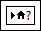

Create local variables for front panel objects in a single VI when you do not have access to a front panel object or you need to pass data between block diagram nodes. When you create a local variable, it appears on the block diagram, but it does not appear on the front panel.
With a local variable, you can write to or read from a control or indicator on the front panel. Writing to a local variable is similar to passing data to any other terminal. However, with a local variable you can write to it even if it is a control or read from it even if it is an indicator. In effect, with a local variable, you can access a front panel object as both an input and an output.
For example, if the user interface requires users to log in, you can clear the Login and Password prompts each time a new user logs in. Use a local variable to read from the Login and Password string controls when a user logs in and to write empty strings to these controls when the user logs out.
Right-click an existing front panel object or block diagram terminal and select Create�Local Variable from the shortcut menu to create a local variable. A local variable icon for the object appears on the block diagram.
You also can select a local variable from the Functions palette and place it on the block diagram. The local variable node, shown as follows, is not yet associated with a control or indicator.

To associate a local variable with a control or indicator, right-click the local variable node and select Select Item from the shortcut menu. The expanded shortcut menu lists all the front panel objects that have owned labels.
LabVIEW uses owned labels to associate local variables with front panel objects, so label the front panel controls and indicators with descriptive owned labels.